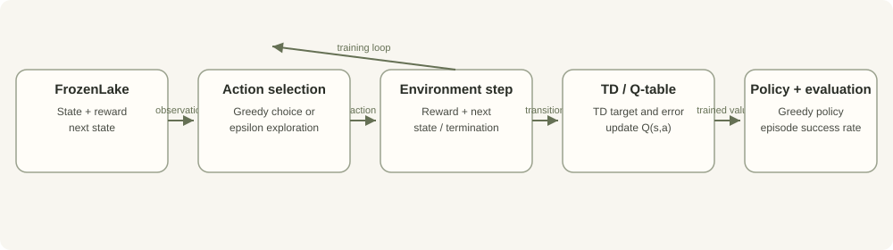

Explicit updates
The update equation is visible and inspectable, which helps debug learning dynamics. Terminal transitions and hyperparameters still require careful handling.
Project case study · Software development · Reinforcement learning
A from-scratch implementation that exposes the training loop instead of hiding action selection, temporal-difference updates, and policy evaluation behind a high-level abstraction.
When a reinforcement-learning library hides most training mechanics, it can be difficult to connect reward feedback to the values used for later actions. A tabular implementation makes the key decisions inspectable: how actions are selected, how the target is computed, how values change, and how the final policy is evaluated.

The update equation is visible and inspectable, which helps debug learning dynamics. Terminal transitions and hyperparameters still require careful handling.
Epsilon-greedy selection trades exploration for actions with higher current Q-values. The decay schedule can materially change learning behaviour.
Training reward is not the same as held-out policy performance. Evaluation episode count, random-seed policy, and environment settings should be recorded.
A tabular Q-table fits small discrete state/action spaces but does not directly scale to large or continuous spaces.
The repository documents running the implementation with python scaffold.py. A reproducible run record should capture environment/version, hyperparameters, random-seed policy, training episodes, evaluation episodes, and success rate.
| Test case | Expected behaviour | Evidence status |
|---|---|---|
| Q-table update | The selected state-action entry changes according to the TD target and learning rate. | Run output or test artifact not yet published here. |
| Terminal transition | Terminal handling avoids bootstrapping from a future-state value where the terminal target requires no future return. | Run output or test artifact not yet published here. |
| Policy evaluation | Success rate is calculated over a stated number of evaluation episodes. | Numerical result not yet published here. |
No particular success-rate score is published without a reproducible report. Results depend on transition settings, exploration schedule, learning rate, discount factor, training length, and evaluation episodes. The next evidence update should add configuration, test output, a short run recording, and the observed policy success rate.
The detailed contribution statement will distinguish personally written learning-loop code, environment/setup scaffolding, test coverage, and any external tutorial or template influence once the project walkthrough is added.